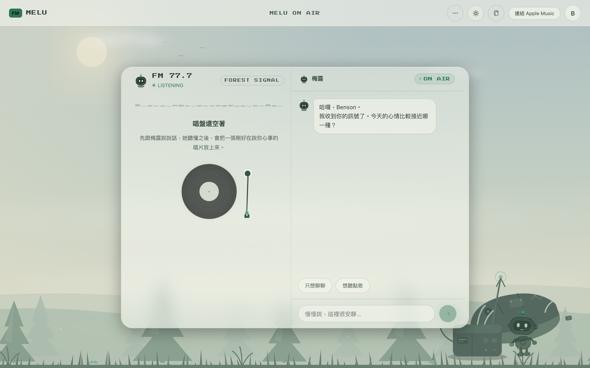
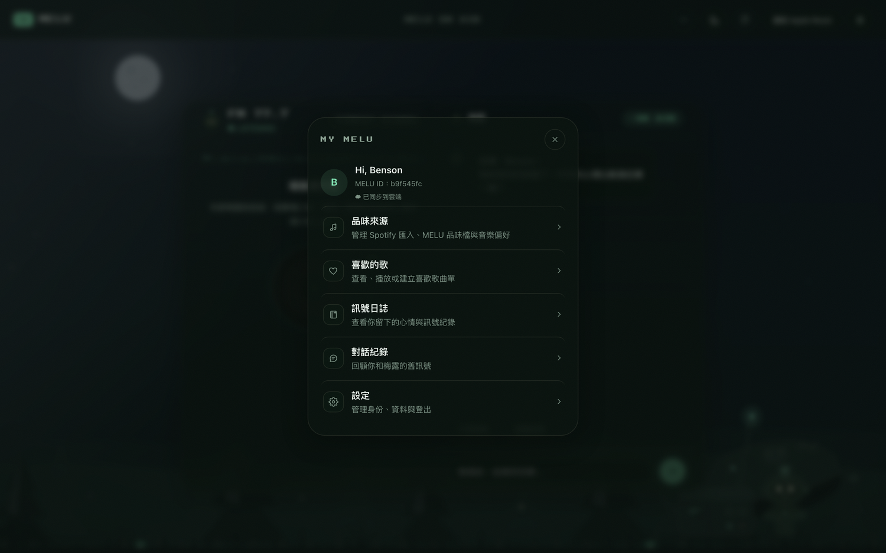
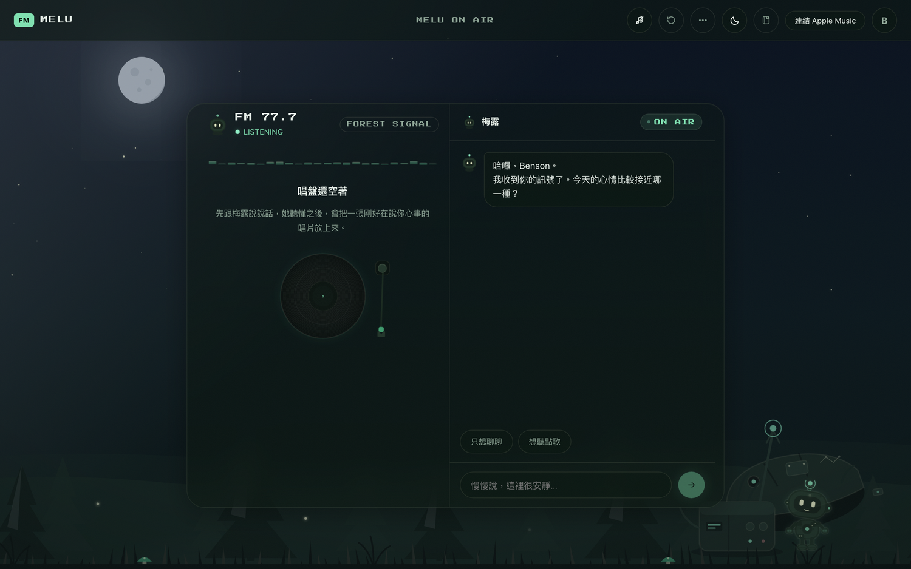
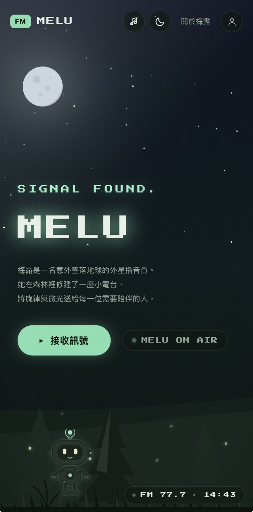
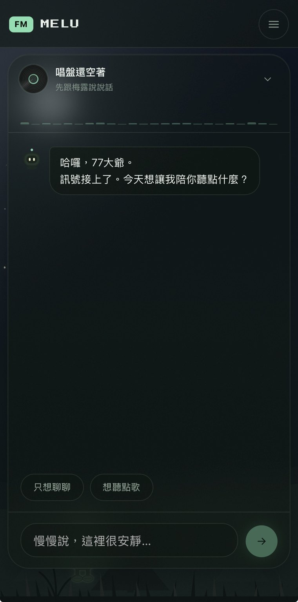

調頻進站
首頁點「接收訊號」，一段連接儀式（CONNECTING → SIGNAL STABLE → ON AIR）把你帶進電台。

Concept
A forest radio where MELU, an alien DJ, reads how you feel before playing a note.
Outcome
Solo-built and shipped as a live, installable PWA at melu-fm.com, with guardrails that stop the AI from fabricating songs or facts.
Project Overview
MELU 是一個森林電台風格的 AI 音樂陪伴產品。使用者透過與外星播音員「梅露」對話，把當下的心情換成一段貼近此刻狀態的音樂訊號——不是單純從播放清單挑一首歌，而是先被聽見、被理解之後，再收到那段剛好適合此刻的旋律。
這是我個人獨立開發的專案——從一個對「音樂與情緒」的好奇出發，一手把概念、角色、對話與介面兜成一個能實際運作、並已上線的產品。它不是團隊產品，而是我用來把想法做出來、並持續打磨的個人作品。
這是一個個人規模、已上線並持續演進的產品。我獨立完成產品概念、互動設計、UX 文案、AI 對話設計與視覺方向——從角色設計、美術方向，到對話腳本與技術整合皆一手包辦。
Why MELU
音樂與情緒的關係一直讓我著迷：同一首歌，在不同心情下聽起來可以完全不同；然而多數音樂 App 只依聆聽紀錄做最佳化，很少真的問你「現在感覺如何」。
我想做的，是在按下播放之前，先有一個被理解、被陪伴的片刻，而不只是一則演算法推薦。這個好奇最後推著我，把它做成一個能實際運作、可以自己一直玩下去的個人專案。
Design Challenge
MELU 不是醫療產品，也刻意避免把自己定位為「音樂治療」——它提供的是陪伴與一個整理心情的空間，而不是治療或診斷。這條界線既是倫理考量，也是設計挑戰：如何讓對話保持溫暖同理，同時不做出承諾、也不誘導使用者的情緒回答；如何給 AI 一個具體、可記憶的角色，又不讓角色蓋過體驗本身；以及，如何讓它生成的內容始終待在可信的範圍裡。
這三道題最後各自收斂成一個決定，貫穿了整個產品——後面的章節，其實都是在回答它們。
Concept
使用者收到的不是「AI 回覆」，而是「訊號」——由梅露發送。牠是一名意外墜落地球的外星人，用飛船零件在森林裡修建了一座小電台，以身份代號 CODE 22、在 MELU FM 77.7 上向外廣播。
這個框架把「被 AI 回應」轉化為「接收到一段為你調頻的訊號」，多了一層溫柔的距離感與儀式感。名字本身也是概念的一部分：MELU = Melo（旋律）+ Lux（光）——音樂與光的結合。
世界觀，影像化
Character & Worldbuilding
這個區別很重要：牠會觀察、會安靜、有自己的節奏，而不是隨時待命、過度殷勤的助理。牠的外殼保留了自己動手修補的痕跡，胸口那顆會發光的「訊號核心」就是名字裡的 Lux，也是牠對外發送與接收訊號的部位。

Experience
首頁是一個沉浸式的森林電台場景：分層的森林背景、角色梅露，與一個「接收訊號」的行動呼籲。點擊後會觸發一段連接儀式（CONNECTING TO MELU FM 77.7 → SIGNAL STABLE → MELU ON AIR），像在調頻電台，而不是單純導覽網頁。


實際操作，是這樣六步：
首頁點「接收訊號」，一段連接儀式（CONNECTING → SIGNAL STABLE → ON AIR）把你帶進電台。
在陪伴頁跟梅露聊當下的狀態，想到什麼說什麼，不必先整理好。
梅露先回應情緒、不急著推歌，也不用暗示性問題誘導你的答案。
情緒被接住後，梅露挑一首「剛好在說你心事」的歌，並說明它為什麼適合此刻。
親手把黑膠唱針放下，音樂才響起——把聆聽變成一個有儀式感的動作。
用播放佇列連著聽、可隨機或循環；隨時用 Signal Log 記下當下的心情。
Features


上線後又長出的功能：


Visual System
夜間模式以分層的深色森林、月光冷調高光為底，主要點綴色是薄荷般的「訊號綠」；日間模式則轉為暖奶油色的清晨森林——被設計成「另一個時刻」，而不是把夜晚調亮的版本。所有顏色都收在一套統一的色彩系統裡，一鍵切換日／夜；兩種模式的文字對比都通過無障礙標準（WCAG AA）。

像素字體只保留給 logo、狀態文字與英文標籤；中文一律使用系統字型。角色與場景的動態維持低頻、不急促，光效只在需要時出現，避免過量的粒子效果。
Conversational Design
MELU 的對話設計遵循幾個核心原則：先接住感受，再推薦音樂；不用暗示性的問題誘導使用者的情緒回答；不越界成為治療或診斷角色。
安全網則做了三層，把使用者的安全放在對話流暢度之前：角色設定本身就要求遇到危機語句立刻停止推薦；前端另有一組關鍵詞獨立把關，不完全依賴模型判斷；真的觸發時，浮現的是台灣在地的求助資源，而不是一句泛泛的關心。
Under the Hood
這類產品最怕 AI「報一首其實不存在的歌」。MELU 用兩段式選歌把這件事從架構上擋掉： 模型永遠不直接輸出歌曲，它只能提出搜尋語，再從伺服器向 Apple Music 目錄查回的真實候選裡挑。

模型提搜尋語 → 伺服器查目錄 → 模型只能從查回來的真實候選裡挑（選項被鎖住、不能自由發揮）→ 再做一次驗證，取回權威的曲目資料。
每首查詢帶「應該是誰唱的」，伺服器逐首比對歌手，對不上就跳過——不會在某歌手的歌單裡混進別人的歌。
直接向 Apple Music 取那張專輯的正版曲目清單（含「最新專輯」自動判定），曲目與歌手都由 Apple 保證。
退為純聊天：誠實說明現在放不了歌，絕不憑空報一個曲名。
技術堆疊 Next.js ＋ React、Anthropic API（讓 AI 的輸出鎖進固定格式）、Apple MusicKit（安全地存取正版曲庫）、Supabase（帳號與跨裝置同步）；以 Vercel 部署、Cloudflare 管網域，並支援加到手機主畫面。另有一層簡→繁轉換，確保回覆不漏出簡體字。
Testing & Iteration
這個產品不是「做完就結束」——我持續把它當真的產品在用， 而真正冒出來的問題，往往比想像的更基本。以下是幾個「用著用著發現 → 找到根因 → 修好」的例子。

問題：要 Slayyyter 專輯的歌，佇列卻冒出 Mariah Carey 的聖誕歌（見上圖）。
根因：「整份歌單」是唯一沒做歌手驗證的路徑——直接取了 Apple 搜尋的第一名。
修正：每首查詢帶「應該是誰唱的」，伺服器逐首比對歌手、對不上就跳過；「某張專輯」則直接向 Apple 取正版曲目清單。
問題：在佇列點「立即播放」，歌換了卻不出聲，得再手動放一次唱針。
根因：換歌只移動了「目前播放」指標，沒有觸發「自動落針」。
修正：點下時多送一個提示，讓播放器在換歌前先設好自動落針——現在一點就播，儀式感留給首播的歌。
問題：隨機鈕會變色，但歌單看起來完全沒變，像壞了。
根因：原本設計成「等這首播完才隨機抽下一首」，按下的當下沒有任何可見變化。
修正：改成按下就立刻打散「接下來」的順序，並照打散後的順序播——所見即所播。
問題：使用者說某藝人做過某事，梅露沒查證就順著附和，甚至腦補細節。
根因：模型純靠記憶回答，且天生傾向迎合使用者的前提。
修正：接上「只查音樂」的事實查證、persona 改成「不確定先查、查不到就誠實說」，並要求遇到不認得的藝名（如中文譯名）先查再回。
問題：中文回覆裡混進「这／说／里」等簡體字。
根因：AI 生成繁中時偶有滲漏，光靠提示詞壓不到 100%。
修正：在伺服器端做確定性的簡→繁轉換，前端顯示層再兜一層——連舊訊息在畫面上都保證是繁體。
這些迭代有個共同點：問題常常不在「AI 夠不夠聰明」，而在互動的可預期性與輸出的可信度——按下去有沒有如預期反應、拿到的東西是不是真的。把這兩件事做對，產品才站得住。
Mobile & Launch
多數人聽音樂是在手機上，所以手機版不是把桌機縮小，而是重新排過：頂部收成漢堡選單與一條迷你播放列，聊天貼在畫面底部，讓拇指最容易搆到的位置留給最常用的動作。播放佇列改成從底部滑上來的面板，可以半開、拖到全開，背景則鎖住不跟著捲。它也能像 App 一樣加到主畫面，開啟後沒有瀏覽器外框。


問題：加到主畫面、以獨立 App 開啟時，第一次啟動的版面會比螢幕短一截，底部的輸入框被切掉，而且它不會自己修正。
根因：iOS 在這個模式下冷啟動時，回報的可用高度少算了狀態列，且算完就不再更新——這是系統本身的已知問題，不是我的版面寫錯。
修正：啟動時放一個看不見的探針去實測真正的螢幕高度，把「系統說的」和「實際的」差值算出來，再用兩個變數補回版面——之後所有高度都以修正後的數值為準。
Design Decisions
前面那三道設計挑戰，最後各自收斂成一個明確的取捨。它們不只是想法，而是決定了整個產品長什麼樣子。
先立下「會觀察、會安靜、有自己節奏」的行為規則，再據此設計動作與對話語氣。角色有了自己的節奏，就不會變成隨時待命、過度殷勤的助理，也讓「陪伴而非治療」這條界線自然成立。
歌曲一律來自真實目錄、由架構保證不可捏造（見 Under the Hood）。與其反覆調整提示詞、期待模型不出錯，不如讓它從一開始就沒有捏造的餘地。
把體驗包成一座森林電台，功能全部收進這個框架；再用克制去收尾——安靜的場景、低頻的動態、只在需要時出現的光效。角色有存在感，卻不會蓋過體驗本身。
Reflection
從「能跑的原型」到「有人真的在用的產品」，中間隔的不是更多功能，而是一堆我原本沒想到的問題：手機上的視口會少算、佇列點了不出聲、指名的歌手混進別人的歌。這些都不是在 Figma 裡看得出來的，只有把它當真的產品用，問題才會自己浮出來。
也因為這樣，我對「設計決定」的理解變得比較具體：讓 AI 可信，靠的不是把提示詞寫得更漂亮，而是從架構上拿掉它出錯的空間；讓產品有陪伴感，靠的也不是加更多動畫，而是知道哪裡該留白。一個人從概念做到上線，最大的收穫是這些判斷都得自己承擔後果——而承擔過，它們才真的變成我的。
Next Steps
目前的判斷多半來自我自己的使用。下一步想找幾位固定使用者做訪談，確認「先被理解、再聽歌」對別人是否也成立。
建立一個可以回頭檢視的標準：從被跳過與被收藏的歌回推，檢驗心情與歌曲之間的媒合邏輯是否可靠。
觀察哪些人會回來、又是為了什麼回來——是為了音樂、為了那段對話，還是為了那個安靜的地方本身。